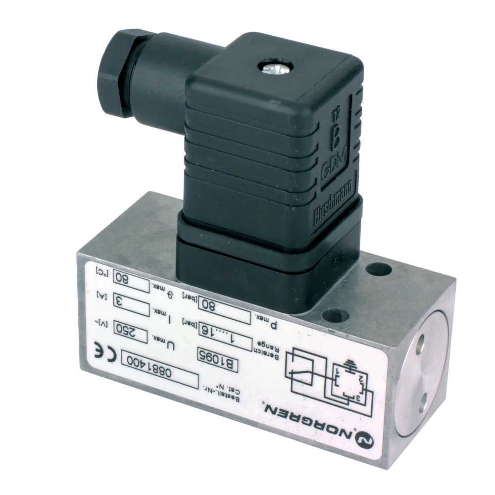
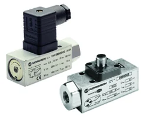
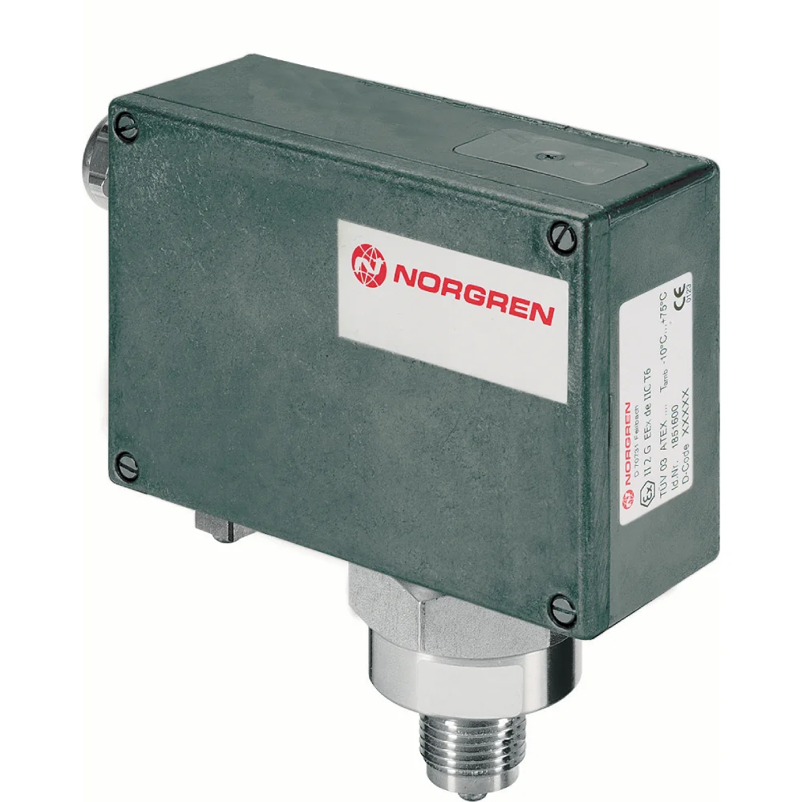
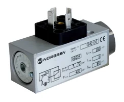
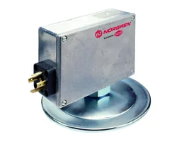
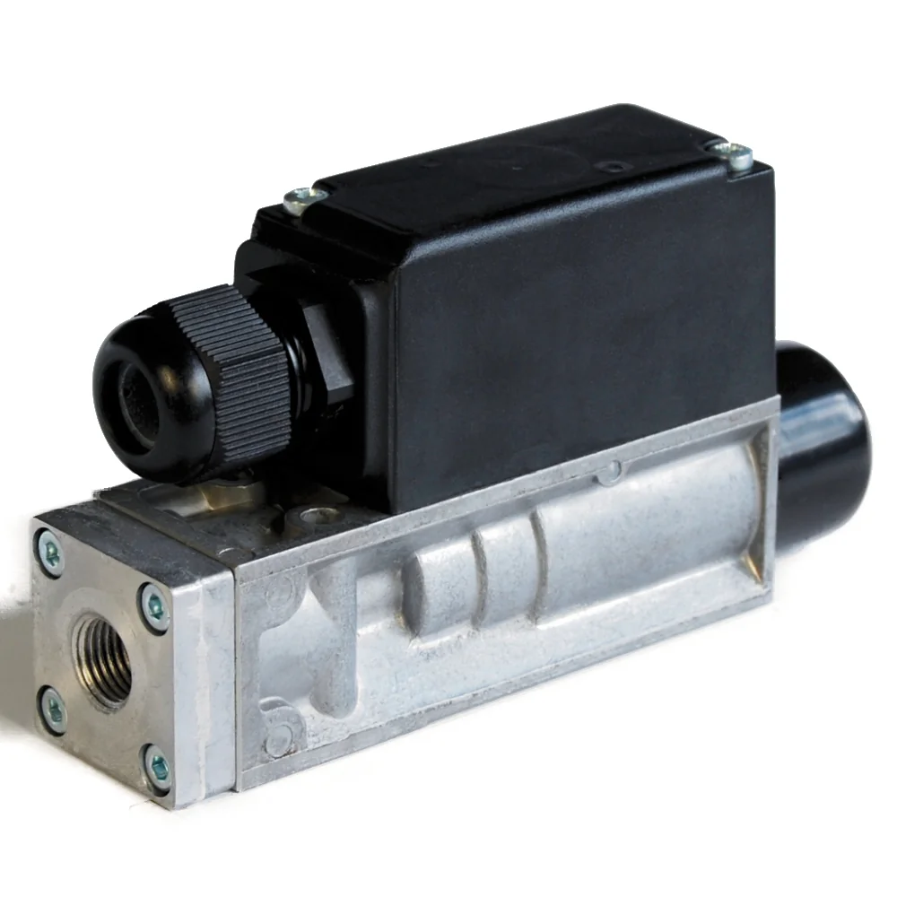

50 mã sản phẩm
Danh sách canonical dẫn về trang chi tiết từng part number.
Công tắc áp suất cơ-điện (electro-mechanical pressure switches) Norgren đóng/ngắt tiếp điểm khi áp suất đạt ngưỡng cài đặt, dùng để bảo vệ và điều khiển hệ thống khí nén hoặc thủy lực. Khi chọn, bạn cần xác định dải áp suất cài đặt, kiểu tiếp điểm (NO/NC/SPDT), ren cổng kết nối và cấp bảo vệ, nên đối chiếu part number với datasheet trước khi báo giá để chọn đúng ngưỡng và kiểu đấu nối. Nếu bạn đang thay công tắc trên máy, hãy gửi mã cũ hoặc ảnh nhãn để chúng tôi tra cứu mã và xác nhận dải đo, tiếp điểm tương thích. Trang giúp đội mua hàng và kỹ thuật bảo trì nhà máy tại Việt Nam so sánh nhanh các biến thể, kiểm tra thông số kỹ thuật và tìm phụ kiện liên quan như đầu nối, gioăng và đế lắp. Gửi part number, BOM hoặc thông số làm việc để được tư vấn đúng dải cài đặt và báo giá chính xác.

Khi đặt công tắc áp suất cơ-điện, hãy cung cấp dải áp suất cần giám sát, kiểu tiếp điểm và ren cổng. Nếu thay thiết bị cũ, gửi mã hoặc ảnh nhãn để đối chiếu part number nhanh. Lưu ý môi chất làm việc (khí, dầu, nước) ảnh hưởng đến vật liệu màng và gioăng, nên chúng tôi xác nhận datasheet trước khi báo giá để đảm bảo tương thích môi chất và tránh chọn sai dải.
Danh sách canonical dẫn về trang chi tiết từng part number.
Datasheet, brochure, installation guide hoặc tài liệu liên quan.
Mã liên quan giúp đặt đồng bộ và tránh thiếu vật tư khi lắp.
Hiển thị 50 mã thuộc category này.
18D Electro-mechanical pneumatic pressure switch, G1/4, 0.5-8 bar

18D Electro-mechanical hydraulic pressure switch, G1/4, 25-250 bar

18D Electro-mechanical pneumatic pressure switch, G1/4, 1-16 bar

18D Electro-mechanical hydraulic pressure switch, G1/4, 40-420 bar

18D Electro-mechanical hydraulic pressure switch, G1/4, 5-70 bar

18D Electro-mechanical pneumatic pressure switch, Flange, 0.5-8 bar

18D Electro-mechanical hydraulic pressure switch, G1/4, 10-160 bar

18D Electro-mechanical pneumatic pressure switch, G1/4, 0.5-8 bar, ATEX certified

18D Electro-mechanical pneumatic pressure switch, G1/4, 0.5-8 bar

18D Electro-mechanical pneumatic pressure switch, G1/4, 0.2-2 bar

18D Electro-mechanical pneumatic pressure switch, Flange, 1-16 bar

18D Electro-mechanical pneumatic pressure switch, G1/4, 1-16 bar, ATEX certified

18D Electro-mechanical pneumatic pressure switch, G1/4, 1-16 bar

18D Electro-mechanical pneumatic pressure switch, Flange, 0.2-2 bar

18D Electro-mechanical pneumatic pressure switch, G1/4, 0.5-8 bar

18D Electro-mechanical pneumatic pressure switch, G1/4, 0.5-8 bar

18D Electro-mechanical pneumatic pressure switch, G1/4, 1-30 bar

18D Electro-mechanical pneumatic pressure switch, G1/4, 0.2-2 bar

18D Electro-mechanical hydraulic pressure switch, flange, 25-250 bar

20D Electro-mechanical allfluid pressure switch, G1/2, 0.5-10 bar, ATEX certified

18D Electro-mechanical pneumatic pressure switch, G1/4, 0.2-4 bar

20D Electro-mechanical allfluid pressure switch, G1/2, 0.5-10 bar

18D Electro-mechanical pneumatic pressure switch, G1/4, 1-16 bar

18D Electro-mechanical pneumatic pressure switch, G1/4, 0.2-2 bar

18D Electro-mechanical hydraulic pressure switch, flange, 40-240 bar

8D Electro-mechanical pneumatic pressure switch, G1/4, 0.2-12 bar

8D Electro-mechanical hydraulic pressure switch, G1/4, 10-160 bar

8D Electro-mechanical pneumatic pressure switch, G1/4, 0.1-6 bar

18D Electro-mechanical pneumatic pressure switch, 1/4 PTF, 1-30 bar

18D Electro-mechanical hydraulic pressure switch, flange, 5-70 bar

18D Electro-mechanical hydraulic pressure switch, flange, 10-160 bar

8D Electro-mechanical pneumatic pressure switch, G1/4, 0.2-12 bar

8D Electro-mechanical pneumatic pressure switch, G1/4, 0.2-12 bar

20D Electro-mechanical pneumatic pressure switch, G1/4, 0-0.25 bar

8D Electro-mechanical pneumatic pressure switch, flange, 0.5-30 bar

20D Electro-mechanical allfluid pressure switch, G1/2, 1-16 bar

20D Electro-mechanical pneumatic pressure switch, G1/4, 0-0.025 bar

8D Electro-mechanical hydraulic pressure switch, G1/4, 5-70 bar

20D Electro-mechanical pneumatic pressure switch, G1/4, 0.004-0.16 bar

20D Electro-mechanical allfluid pressure switch, G1/2, 0.5-10 bar, ATEX certified

20D Electro-mechanical allfluid pressure switch, G1/2, 0.5-10 bar

20D Electro-mechanical allfluid pressure switch, G1/2, 1-16 bar

8D Electro-mechanical pneumatic pressure switch, G1/4, 0.5-30 bar

20D Electro-mechanical pneumatic pressure switch, G1/4, 0-0.06 bar

8D Electro-mechanical pneumatic pressure switch, G1/4, 0.5-30 bar

8D Electro-mechanical hydraulic pressure switch, flange, 10-160 bar

8D Electro-mechanical hydraulic pressure switch, G1/4, 10-160 bar

8D Electro-mechanical hydraulic pressure switch, G1/4, 50-250 bar

18D Electro-mechanical pneumatic pressure switch, Flange, -1-0 bar
Gửi dải áp suất cần giám sát và kiểu tiếp điểm; chúng tôi đối chiếu datasheet Norgren để xác nhận mã có dải cài đặt phù hợp trước khi báo giá.
Có, khác về vật liệu màng/gioăng. Bạn gửi môi chất làm việc để chúng tôi chọn mã tương thích theo thông số kỹ thuật.
SPDT có tiếp điểm chuyển (NO/NC), SPST chỉ một trạng thái. Gửi yêu cầu đấu nối để chúng tôi xác nhận biến thể đúng.
Có. Chúng tôi báo giá kèm phụ kiện liên quan như đầu nối, gioăng và đế lắp theo cấu hình bạn cần.